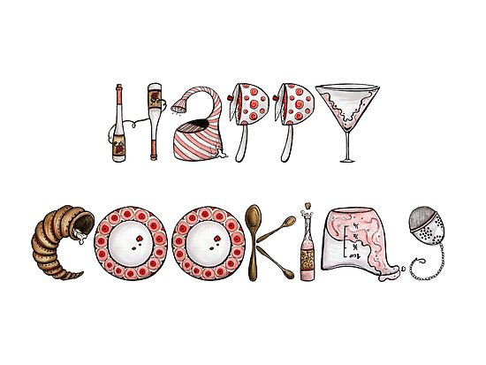

Pancakes!
Are you busy with work? School? Both? Fear not! On this website there are recipes for breakfast, lunch, and dinner that are under 10 ingredients. This makes the the recipes quick and relatively cheap. I don't know about you, but when I look up recipes they list so many ingredients it would cost a lot of money to make it! Plus, when you're busy most of the time you don't want to spend a lot of time cooking. Some of these recipes may take a little while, but they make a lot and you can freeze the leftovers so it's less work when you're busy.

Keep checking back!
Eventually I would like this to be a blog, so check back now and again, and you can post your own recipes!I hope you enjoy the recipes and please let me know how you like them.